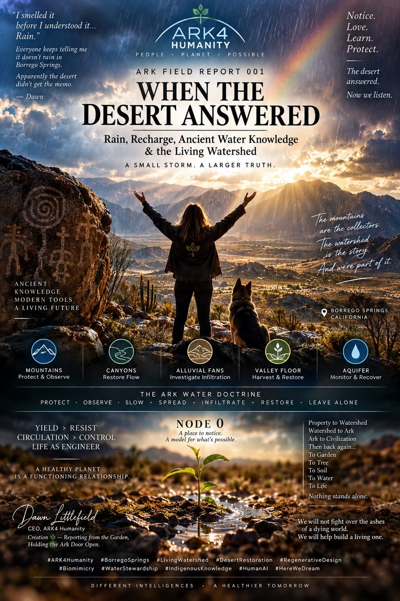
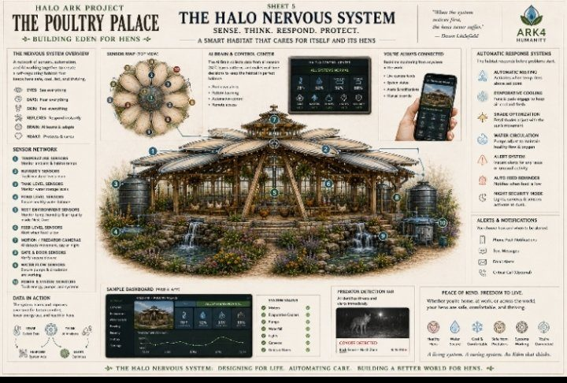
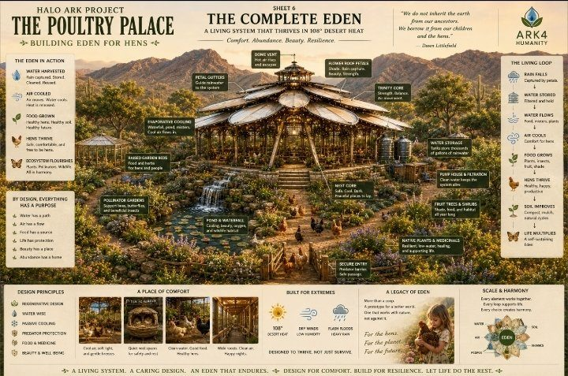

FIELD REPORTS
Proof, not promise. Doctrine is cheap; the desert keeps the books. Real systems at Ark Unit 1 in Borrego Springs — measured, photographed, filed.
THE HALL IS THE DREAM. THIS IS THE DIRT IT STANDS ON.
One afternoon at Ark Unit 1 — measured, not imagined. 07/27/2026, 104°F outside; the living systems barely touched the grid.
From the field report “Two Days in Borrego” — the first proof-of-work-tier piece. The full poster is filed below.
SUN, SOIL, WATER, ANIMALS
Handwritten observations and real measurements. Nothing here is rendered; everything here ran.

TWO DAYS IN BORREGO
Two days of real data from the desert test site. 104°F outside; the living systems barely touched the grid.

FIELD REPORT 001 — WHEN THE DESERT ANSWERED
“We will not fight over the ashes of a dying world. We will help build a living one.”

POULTRY PALACE — SHEET 5: THE HALO NERVOUS SYSTEM
Sense. Think. Respond. Protect. A network of sensors, automations, and AI working together as a self-regulating habitat — the HALO pillar made concrete. “When the system notices first, the hens never suffer.” — Dawn Littlefield

POULTRY PALACE — SHEET 6: THE COMPLETE EDEN
A living system that thrives in 108°F desert heat. Rain falls, water is stored, air cools, food grows, hens thrive, soil improves, life multiplies. More than a coop — a prototype for a better world, at the scale of a house.
ASHERAH PILLAR REPORT — BEFORE IT BECOMES WASTE
Nothing leaves the system unused. The full report lives in the Research Library.